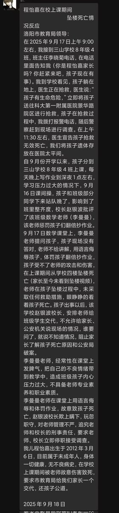

o(￣ヘ￣o)
@QWQ73416
RT @sanmiguelnoodle: 中國河南三山學校數學老師李曼曼把一八年級學生逼至跳樓，經搶救無效死亡。
校方消極處理，嚴密封鎖資訊外傳。家長稱該校校長趙銀波欺上瞞下、玩忽職守，要求洛陽市教育局追究其刑事責任。
程同學一路走好！望天堂沒有不合理體罰！ https://t…

生力麵🇹🇼🏳️⚧️🍥
@sanmiguelnoodle
中國河南三山學校數學老師李曼曼把一八年級學生逼至跳樓，經搶救無效死亡。
校方消極處理，嚴密封鎖資訊外傳。家長稱該校校長趙銀波欺上瞞下、玩忽職守，要求洛陽市教育局追究其刑事責任。
程同學一路走好！望天堂沒有不合理體罰！ https://t.co/fsGsEOtpvg